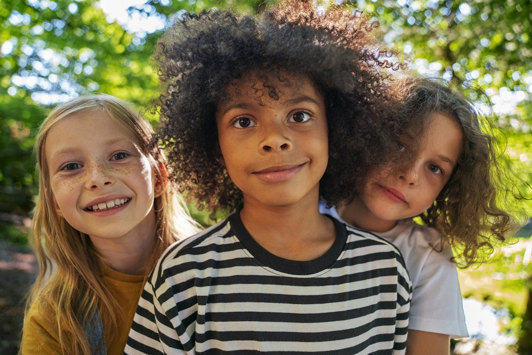
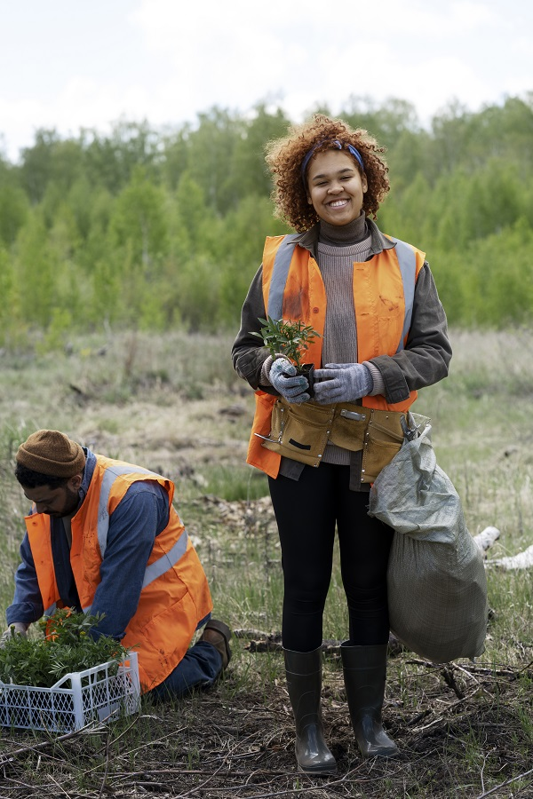
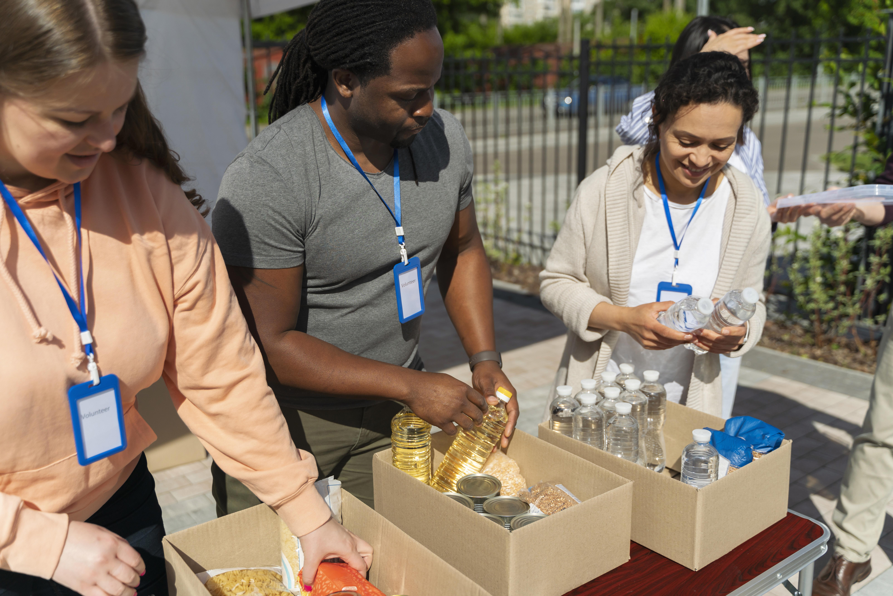

Instituições Parceiras
Conheça as organizações que compartilham nossa missão de transformar vidas
A ONG Connection trabalha em parceria com instituições dedicadas a causas sociais, ambientais e humanitárias. Juntos, promovemos impacto positivo e sustentável nas comunidades que atendemos.

Orfanato Esperança
Oferece acolhimento, educação e apoio emocional a crianças em situação de vulnerabilidade, garantindo um futuro mais promissor.
Saiba Mais
Lar São Vicente
Proporciona cuidado, dignidade e qualidade de vida a idosos, com atividades recreativas e assistência médica.
Saiba Mais

Projeto Verde Vida
Promove sustentabilidade por meio de reflorestamento, educação ambiental e ações para preservar o meio ambiente.
Saiba Mais

Voluntários em Ação
Capacita e engaja voluntários para atuar em projetos sociais, promovendo inclusão e impacto comunitário.
Saiba Mais